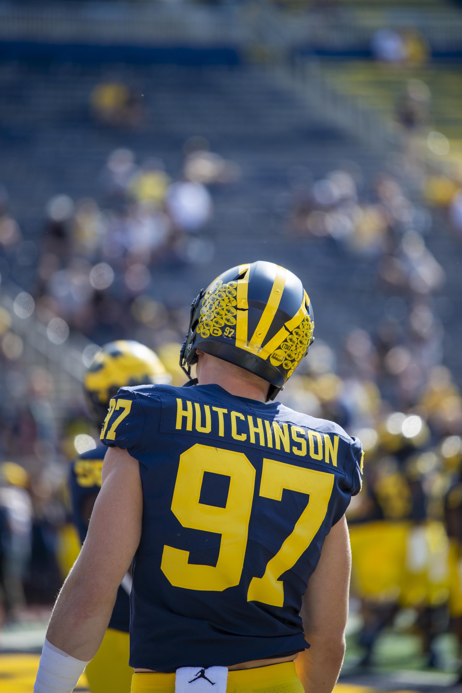

The Michigan Wolverines are a College football team that has been a very dominant team since the league was created. Their rivals are The Michigan state Spartans And The Ohio State Buckeyes.
Michigan Has beat Ohio State The last 4 Years in a row. Michigan also has 12 national championship wins, While Ohio State Only has 9.